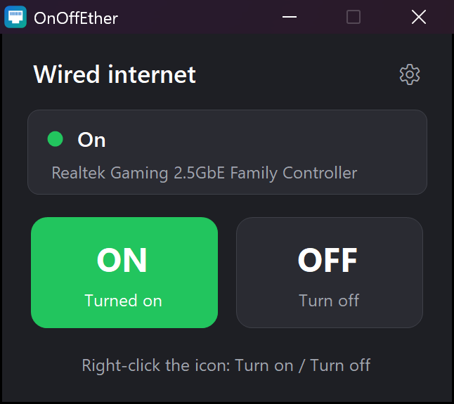
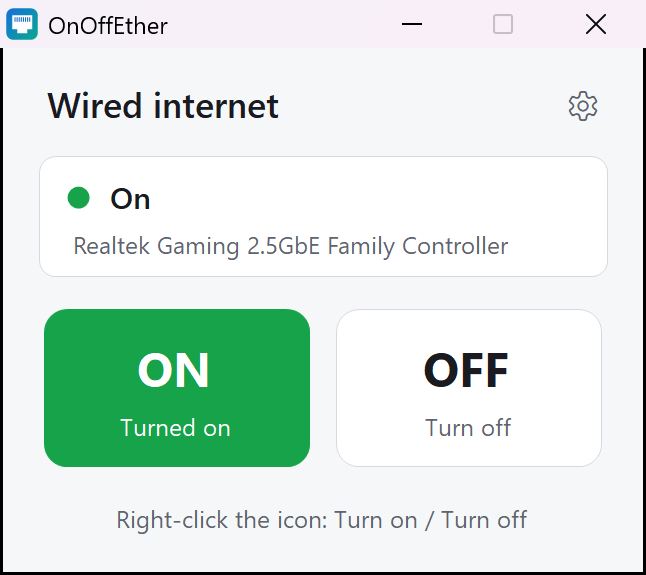

Turn your wired internet
on and off with one click
OnOffEther enables and disables your Ethernet adapter from a small panel — or straight from the taskbar icon, without asking for permission every time.


What it does
A panel with two buttons
ON and OFF, plus a line telling you whether the cable is connected right now. No menus to dig through.
Right-click the taskbar icon
Pin it once and the right-click menu offers "Turn on" and "Turn off" directly, without opening the app.
No permission prompts
Windows asks for administrator rights once, while installing. After that, switching is instant and silent.
Light and dark themes
Pick the one you like from the gear menu. It is remembered for next time.
Five languages
English, Spanish, French, German and Portuguese, switchable at any moment.
Tiny and quiet
121 KB, no background service, no updater, no telemetry. It only runs while its window is open.
How it works
OnOffEther does exactly what you would do by hand in Device Manager: it enables or disables the physical Ethernet adapter, using the network interfaces that are built into Windows. Nothing is intercepted, filtered or routed through anywhere else.
Turning the adapter off cuts the wired connection completely, the same as unplugging the cable. Turning it back on restores it, and Windows reconnects by itself a couple of seconds later.
Changing an adapter requires administrator rights, which is why Windows normally shows a permission prompt. During installation OnOffEther registers two Windows scheduled tasks — one to turn the adapter on, one to turn it off — so later on the switch happens with no prompt at all. Both tasks are removed when you uninstall.
Install
- Download OnOffEther-Setup-1.5.0.exe and run it. Windows will ask for administrator permission once.
- Choose your language in the box at the top right, then press Install.
- Press Open OnOffEther. When the icon appears in the taskbar, right-click it and choose Pin to taskbar.
From then on: click the icon for the ON/OFF panel, or right-click it to switch straight away.
Uninstall
Settings → Apps → Installed apps → OnOffEther → Uninstall. If the wired connection is off at that moment, it is turned back on before anything is removed, so you are never left without internet.
Requirements
| Operating system | Windows 10 or Windows 11 |
|---|---|
| Hardware | A wired Ethernet adapter (built in or USB) |
| Permissions | Administrator, only to install or uninstall |
| Disk space | Around 130 KB |
Questions
- Does it affect my Wi-Fi?
- No. It only switches wired Ethernet adapters, so your Wi-Fi keeps working exactly as before.
- Will it ask for permission every time I switch?
- No. Permission is granted once during installation.
- Does it collect any data?
- No. OnOffEther makes no internet connections of its own and sends nothing anywhere. See the privacy policy.
- Is it safe to turn the adapter off?
- Yes. It is the same switch Windows itself offers in Device Manager, and nothing is modified permanently. Just remember that if the cable is your only connection, turning it off leaves the PC offline until you turn it back on.
- What happens if my PC has two network cards?
- They are switched together, and the panel tells you how many were found.
- Can I change the language later?
- Yes, from the gear icon in the panel. The choice is saved for your Windows user.
Support
Something not working, or an idea to make it better? Open a ticket and we will answer there:
github.com/divolandialabs/onoffether/issues
When reporting a problem, it helps a lot to say which version of Windows you use and the name of your network card, which is the grey line in the middle of the panel.